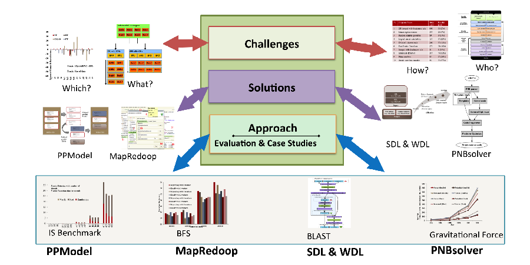

Modeling of High Performance Programs to Support Heterogeneous Computing
Download
Dissertation, TEX dissertation, Slides
The specific aim of this dissertation is to introduce new software engineering ideas (e.g., Model-Driven Engineering (MDE) and Domain-Specific Languages (DSLs)) and supporting tools to assist in the evolution of parallel programs used by HPC programmers, as well as HPC users. In this dissertation, we show that tool support can be provided for HPC programs at different levels of abstraction targeted for a specific set of users. These levels of abstraction are: 1) Code-level, 2) Algorithm-level, 3) Program-level, and 4) Sub-domain-level. We designed, implemented, and evaluated DSLs at each abstraction level to support heterogeneous computing.
Code-level abstraction is very general and it can be applied to any C/C++ program, while algorithm-level abstraction is only applicable for programs implementing MapReduce algorithms. Compared to code-level and algorithm-level abstraction, program-level and sub-domain-level abstractions are very specific and are only applicable to specific domains and users (e.g., Signature Discovery Intiative (SDI) project participants and Nbody solution users). We observed that if the domain is specific, less information is required from the user because the DSLs are domain-aware. If the domain is very general (e.g., in the code-level and algorithm-level abstractions), there are more application usage areas for the DSL, but adoption of the DSL at more general levels requires additional information from the end-users.

{kind=link}